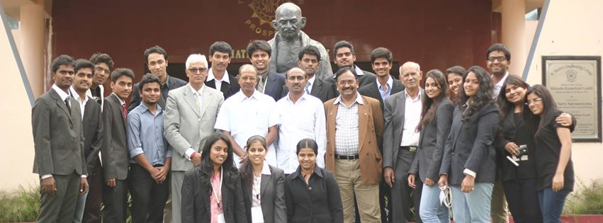

Team Of Up IEEE

The performance of these teams might lead you to conclude that there are really only two horses left in the running. But when I caught up today with director of this team , he told me not to read too much into the rankings. Only a handful of slots were available in each category, he said, and the two teams just so happened to be quite mature in all three.
ROBOTICES TEAM
The IEEE chapter at UT Knoxville has a rich tradition of participating in robotics competitions. Every year the IEEE Robotics Team seeks to assemble a group of talented undergraduate students with the goal of designing and building an autonomous robot for entry in a national robotics competition sponsored by IEEE. In the 2012-2013 academic year, UT's IEEE Robotics Team expanded by starting a new Graduate Robotics Team comprised entirely of MS and PhD students
 Robotics is the branch of mechanical engineering, electrical engineering and computer science that deals with the design, construction, operation, and application of robots,[1] as well as computer systems for their control, sensory feedback, and information processing. These technologies deal with automated machines that can take the place of humans in dangerous environments or manufacturing processes, or resemble humans in appearance, behavior, and/or cognition. Many of today's robots are inspired by nature contributing to the field of bio-inspired robotics.
Robotics is the branch of mechanical engineering, electrical engineering and computer science that deals with the design, construction, operation, and application of robots,[1] as well as computer systems for their control, sensory feedback, and information processing. These technologies deal with automated machines that can take the place of humans in dangerous environments or manufacturing processes, or resemble humans in appearance, behavior, and/or cognition. Many of today's robots are inspired by nature contributing to the field of bio-inspired robotics.